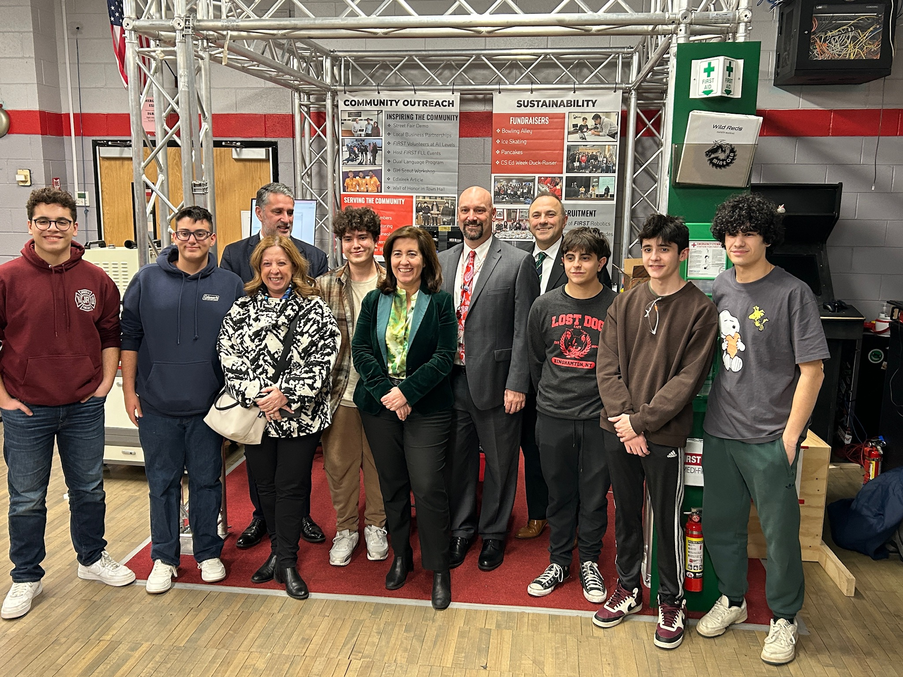
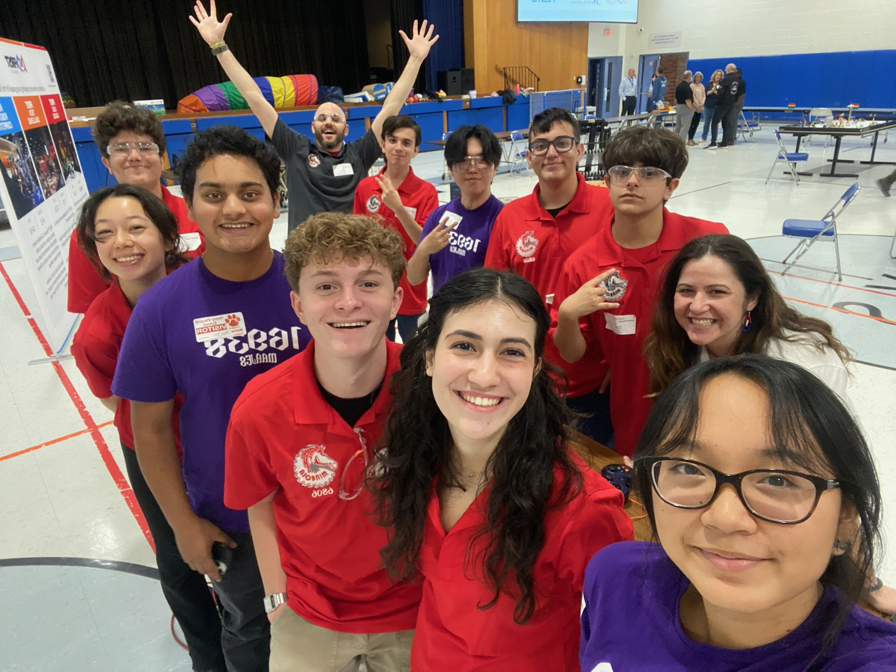
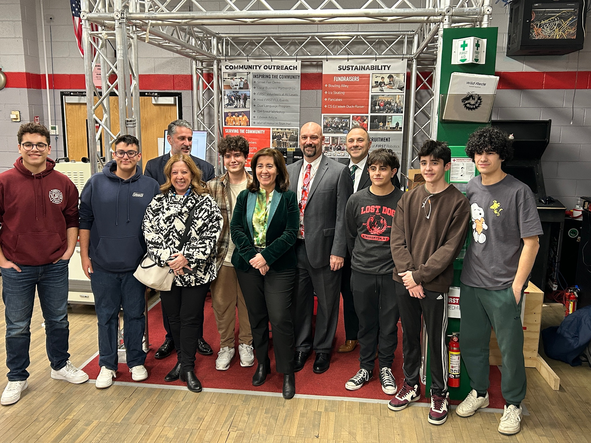
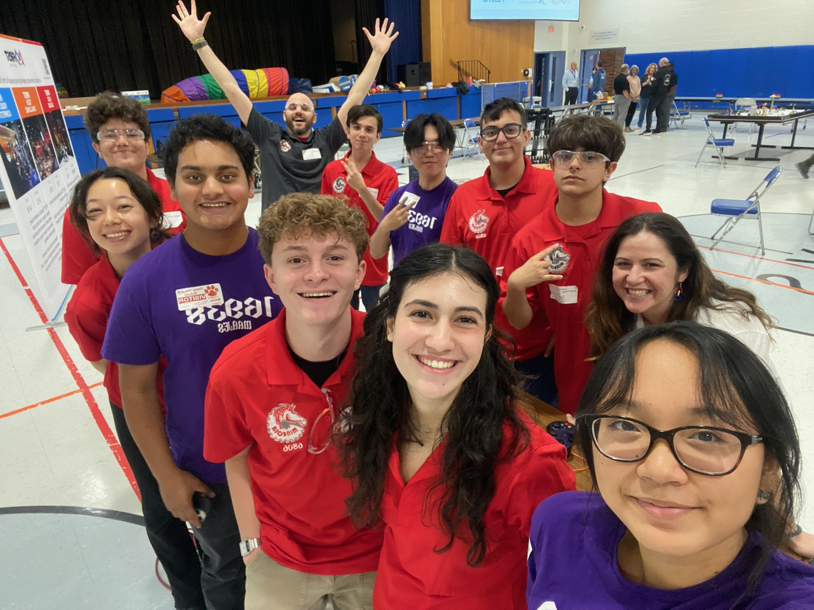

Im Nathan Padinha, a dedicated and proactive individual on a mission to make a difference. Throughout my journey, I've consistently shown a strong work ethic and an unwavering commitment to success.
At the core of my professional identity lies effective communication. Whether I'm engaging with campers as a Camp Counselor, ensuring clear instructions as a Pool Attendant, or streamlining internal communication documents during my internship at CoreBTS, I thrive on connecting with others and tailoring my message to resonate with diverse audiences.
Leadership is where I truly shine. Guiding teams, driving operational efficiency, and fostering professional relationships are all areas where I excel. My articulate and persuasive communication style enables me to lead with confidence and effectiveness in any situation.
I'm also a lifelong learner, constantly seeking to expand my skills and knowledge. My certifications in Osha 10, AutoCad, Inventor, Python, and HTML are a testament to my dedication to personal and professional growth.
I invite you to explore my portfolio and learn more about my journey and accomplishments. If you're looking for someone who brings a unique blend of communication prowess, leadership skills, and technical expertise to the table, then look no further. Let's connect and explore how I can contribute to your team's success.
Thank you for visiting!

 


